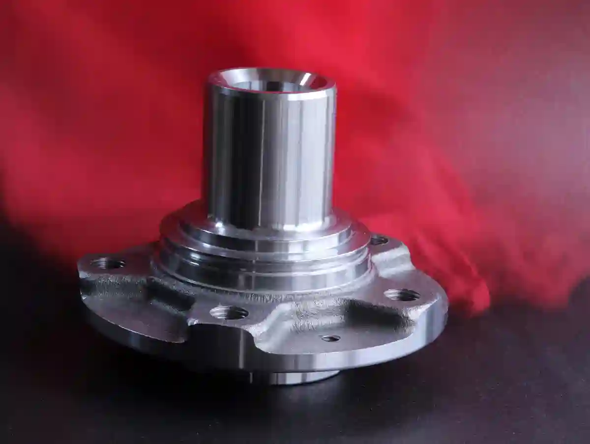
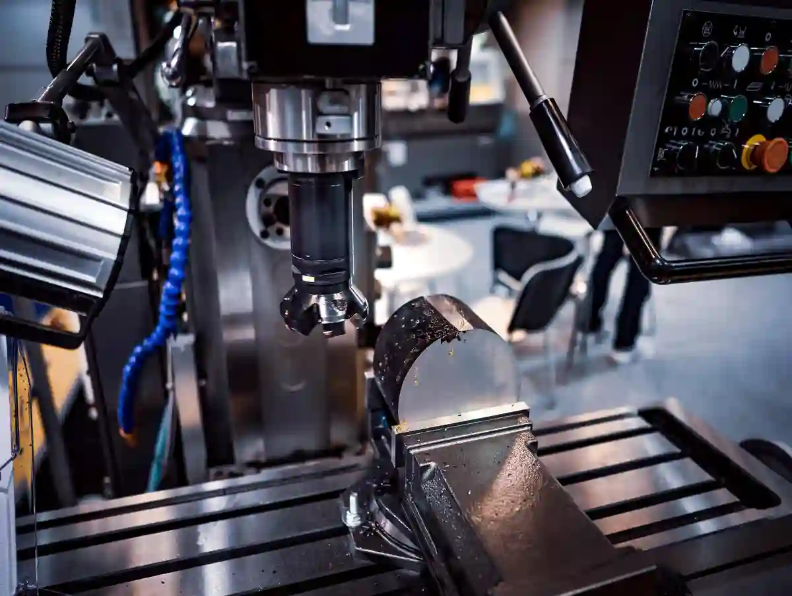

Ar-Ge İçin Özel Parça İmalatı: Ar-Ge Süreçlerinde Özel Parça İmalatının Rolü
Ar-Ge masasında doğru fikirler hızla çoğalır; fakat sahaya inip “çalışan” ürüne dönüşmeyen her fikir, zaman ve bütçe kaybına dönüşebilir. İşte bu noktada ar-ge için özel parça imalatı, Ar-Ge’nin teoriden pratiğe geçişini mümkün kılan kritik bir kaldıraçtır. Bir prototipin yalnızca “görünmesi” yetmez; yük altında davranması, montaj uyumu göstermesi, tolerans zincirini koruması ve ölçülebilir biçimde doğrulanması gerekir. Bu yüzden ar-ge cnc üretim süreçleri; tasarımın üretilebilirliğini (DFM), ölçüm planını ve test senaryolarını aynı masada buluşturarak Ar-Ge riskini düşürür.
Ar-Ge ekipleri çoğu zaman şu ikilemde sıkışır: “Hızlı bir numune mi üretelim, yoksa seri üretime yakın bir prototip mi?” Cevap, doğrulamak istediğiniz hipoteze bağlıdır. İlk fazda kaba doğrulama için daha hızlı yöntemler yeterli olabilir; fakat ürün doğrulama aşamasında ürün doğrulama prototipi artık “temsil” değil “kanıt” üretmelidir. Bu da genellikle mühendislik test parçaları seviyesinde tolerans, yüzey kalitesi ve malzeme davranışı kontrolü ister. Burada deneysel parça üretimi yaklaşımı devreye girer: Tek seferlik ama ölçülebilir, tekrarlanabilir ve raporlanabilir parça üretimi.
Ar-Ge’de “özel parça” Neyi Değiştirir?
Ar-Ge’de özel parça, fikri somut veriye dönüştüren köprüdür. Tasarım varsayımları; tolerans, malzeme davranışı ve montaj uyumu üzerinden gerçek koşullarda sınanır. Böylece ekip, “çalışıyor mu?” sorusunu ölçülebilir kriterlerle yanıtlar. Erken aşamada sorunları görmek, revizyon döngülerini kısaltır ve maliyetli seri üretim hatalarını önler. Bu yaklaşım, ar-ge için özel parça imalatı ile karar kalitesini artırır.

Prototipleme Bir “çıktı” değil, Bir “kanıtlama” Adımıdır
Ar-Ge’de prototip, çoğu ekipte yanlış anlaşılan bir kavramdır. Prototip; yalnızca yeni ürünün maket hali değil, tasarım varsayımlarını test eden bir deney düzeneğidir. Bu yüzden ar-ge için özel parça imalatı; çizimden gelen ölçülerin gerçekten işlenebilir olup olmadığını, seçilen malzemenin gerçek yükleme altında nasıl davrandığını ve montaj ilişkilerinin sahada nasıl sonuç verdiğini gösterir.
Örneğin bir gövde parçasında 0,02 mm konum toleransı tanımladıysanız, bunu sağlayacak bağlama stratejisi, takım yolu ve proses zinciri prototipte denenmeden seri üretime geçmek ciddi bir kumardır. Bu kumarı azaltan şey; prototip parçasını “üretmek” değil, “doğrulamak” için üretmektir.
“Deneysel Parça Üretimi” ile Hipotez Test Etmek
Deneysel parça üretimi; Ar-Ge’de tek seferlik üretimi, mühendislik disiplinine bağlayan yaklaşımdır. Burada amaç “çıkan parçaya bakalım” değil; “ölçelim, test edelim, raporlayalım ve karar verelim”dir. Bu yaklaşımda parça; ölçüm noktaları, referans datum’ları, kritik ölçüler (CTQ) ve test senaryolarına göre tasarlanır. Sonuç: Ar-Ge kararları sezgiden veriye taşınır.
Ar-Ge CNC Üretim Yaklaşımı Neden Çoğu Zaman En Doğru Yoldur?
CNC üretim, Ar-Ge’de hız ile doğruluğu aynı potada eritir. Karmaşık geometrilerde tekrarlanabilirlik sağlar; datum zinciri, fikstürleme ve takım yolu kontrolüyle prototipin “temsil gücünü” yükseltir. Bu sayede revizyonlar arasında tutarlı kıyas yapılır, ölçüm sapmaları azalır. Ayrıca seri üretime yakın proses koşulları oluşturduğu için öğrenme kalitesi artar. Bu yaklaşım, ar-ge cnc üretim hedeflerinde kritik avantaj sağlar.
Geometri Karmaşıklığında Hız + Doğruluk Dengesi
CNC; Ar-Ge’de özellikle karmaşık geometrilerde, delik/kanal/cep ilişkilerinde ve hassas datum zincirlerinde ciddi avantaj sağlar. Çünkü CNC’de doğru fikstür ve doğru takım yolu ile, prototipte bile seri üretime yakın doğruluk yakalanabilir. Bu, ürün doğrulama prototipi için “benzer üretim koşulu” oluşturur.
Ayrıca CNC; hızlı revizyon döngülerine uygundur. Revizyon geldikçe program/bağlama optimizasyonu da gelişir. Böylece özel üretim ar-ge çözümleri kapsamında prototipten küçük seriye geçiş daha kontrollü yapılır.
Üretilebilirlik (DFM) Kontrolü ve Maliyet Sürprizlerini Önleme
Ar-Ge’nin en pahalı hatası; “çalışan prototip” ile “üretilebilir ürün”ü aynı şey sanmaktır. ar-ge için özel parça imalatı doğru yapıldığında, tasarımın üretilebilirliği daha erken ortaya çıkar:
- İç köşe radyüsleri takım erişimine uygun mu?
- Kör delik derinlik/çap oranı riskli mi?
- İnce cidar titreşim yapar mı?
- Toleranslar gerçekten gerekli mi, yoksa fazla mı sıkı?
Bu sorulara prototipte yanıt almak, seri üretimde maliyet patlamasını önler.
Ar-Ge’de Özel Parça İmalatı Süreci Nasıl İlerlemeli?
Sağlıklı bir Ar-Ge üretim akışı, teknik veri paketiyle başlar: çizim, fonksiyon, kritik ölçüler ve kabul kriterleri net olmalıdır. Ardından proses seçimi yapılır; malzeme ve tolerans hedefleri belirlenir. Üretimle eş zamanlı ölçüm planı hazırlanır ve rapor formatı tanımlanır. Son adımda test geri bildirimiyle revizyon yönetilir. Bu disiplin, deneysel parça üretimi sürecini hızlandırır ve belirsizliği azaltır.
1) Teknik Veri Paketi: Çizim + Fonksiyon + Test Senaryosu
Sadece STEP dosyası göndermek çoğu projede yetmez. Ar-Ge’de parça “neden” üretildiği için önemlidir. Bu yüzden teknik paket; fonksiyon tanımı, test koşulu, kritik ölçüler (CTQ), yüzey gereksinimleri ve kabul kriterleri içermelidir.
2) Proses Seçimi: Malzeme + Tolerans + Adet + Zaman
Ar-Ge’de çoğu zaman adet düşüktür; fakat tolerans yüksektir. Bu, proses seçimini kritik kılar. İşte burada mühendislik test parçaları yaklaşımı devreye girer: Parçanın test edileceği koşul; malzeme seçimini, ısıl işlem ihtiyacını ve ölçüm planını belirler.
3) Ölçüm Planı: “üretim kadar ölçüm de tasarlanır”
Ar-Ge’de ölçüm, sonradan eklenen bir adım olmamalı. Ölçüm planı; datum’lar, ölçü aletleri, tekrarlanabilirlik hedefi ve rapor formatını kapsamalıdır. Bu yaklaşım; test sonuçları ile ölçüm sapmalarını karıştırmanızı engeller.
Bu konuyu derinlemesine pekiştirmek için Özel Parça Kalite Kontrol – Ölçüm ve Tolerans Süreçleri yazımızı okuyun. Ölçüm altyapısını anlayabilmek için Kalite Kontrol ve Ölçüm Hizmetleri ile Güvenilir Üretim Standartları sayfamızı inceleyin.
Ar-Ge’de Dış Ekosistem: Destekler, Mevzuat ve Standartlar Neden Önemli?
Ar-Ge projelerinde sadece üretim değil; finansman, mevzuat ve kalite yaklaşımı da projeyi hızlandırır. Türkiye’de Ar-Ge ve yenilik destekleri tarafında TÜBİTAK’ın sanayi odaklı program başlıkları temel referanstır. Örneğin “sanayi Ar-Ge destek programları” çerçevesini görmek için şu kaynağı inceleyebilirsiniz: TÜBİTAK Ulusal Destek Programları.
Ar-Ge/Tasarım faaliyetlerinin hukuki zemini için Sanayi ve Teknoloji Bakanlığı tarafındaki mevzuat sayfaları da yol göstericidir: Ar-Ge/Tasarım Mevzuatı (Kanun ve Yönetmelikler).
Kalite yönetimi ve sistem yaklaşımı açısından ISO 9001 çerçevesine bakmak, özellikle tedarikçi değerlendirmesinde dili standartlaştırır: TSE – TS EN ISO 9001.
Ürün Doğrulama Prototipi: “çalışıyor” demek yetmez, “kanıtlı çalışıyor” olmalı
Ar-Ge’de en sık yapılan hata; prototipin işlevini yalnızca “gözle” doğrulamaktır. Oysa ürün doğrulama prototipi, ölçülebilir hedeflere bağlanmalıdır: kuvvet, tork, sızdırmazlık, aşınma, sıcaklık, titreşim, montaj uyumu… Bu hedeflerin her biri; parça geometrisini, toleransları ve malzeme seçimini etkiler. Dolayısıyla ar-ge için özel parça imalatı, ürün doğrulamada “test düzeneği” gibi çalışır: bir hipotezi doğrular veya çürütür.

Doğrulama Prototipini Tanımlayan 5 Teknik Kriter
- Temsili malzeme: Seri üretimde ne kullanılacaksa, prototipte de ona yaklaşın.
- Temsili proses: CNC ile üretilecekse prototipte de CNC düşünün; çünkü yüzey, gerilim, tolerans davranışı değişir.
- Kritik tolerans zinciri: Montajı belirleyen ölçüler CTQ’dur; her ölçü “eşit” değildir.
- Ölçüm tekrar edilebilirliği: Ölçüm planınız yoksa test sonuçlarınız “gürültü” içerir.
- Dokümantasyon: Revizyonları izlemek için şarttır.
Bu çerçevede ar-ge cnc üretim; temsili proses üretmek için güçlü bir çözümdür. Çünkü CNC ile; bağlama sayısını azaltıp konum hatalarını düşürebilir, kritik yüzeylerde pürüzlülük hedeflerine yaklaşabilir ve revizyon döngülerini hızlı yönetebilirsiniz.
Mühendislik Test Parçaları: Ar-Ge’nin “sessiz kahramanı”
Test parçaları çoğu zaman nihai ürün değildir; kritik bir bölgeyi temsil eden, riski erken yakalayan akıllı örneklerdir. Doğru tasarlanmış bir test parçası; pahalı prototip üretilmeden önce deformasyon, aşınma, sızdırmazlık veya montaj sorunlarını görünür kılar. Datum’ların doğru seçilmesi ve ölçüm noktalarının tanımlanması, test sonucunun güvenilirliğini artırır. Bu sayede mühendislik test parçaları karar sürecini hızlandıran bir “kanıt” üretir.
Test Parçası Her Zaman Nihai Ürün Değildir
Mühendislik test parçaları çoğu zaman ürünün birebir kendisi değildir; bazen daha yalın bir “kupon”, bazen bir alt bileşen, bazen de belirli bir kritik bölgeyi temsil eden bir örnektir. Ama iyi tasarlanmış test parçası; pahalı bir prototipi üretmeden önce kritik riski ortaya çıkarır.
Örnek senaryolar:
- İnce cidarlı bir gövdede titreşim ve yüzey dalgalanması riski
- Pres geçme bir yatakta tolerans ve ovalite hassasiyeti
- Sızdırmazlık yüzeyinde düzlemsellik/çapak riski
- Dişli bir bölgede takım erişimi ve diş formu riski
Bu senaryoların her birinde ar-ge için özel parça imalatı, “risk avcısı” gibi çalışır.
Test Parçası Tasarımında Sık Yapılan 3 Hata
1) Kritik Bölgeyi İzole Etmemek
Test etmek istediğiniz bölgeyi izole etmezseniz, başka bir etkenden kaynaklı başarısızlığı yanlış yorumlayabilirsiniz.
2) Ölçüm Datum’larını Tanımlamamak
Datum yoksa ölçüm yoktur; ölçüm yoksa doğrulama yoktur.
3) Aşırı Sıkı Toleransla “kendini sabote etmek”
Ar-Ge’de toleranslar bazen “güvenlik payı” gibi düşünülür. Oysa fazla sıkı tolerans; zaman ve maliyeti şişirirken öğrenme hızını düşürür.
Deneysel Parça Üretimi ile Hızlı Öğrenme Döngüsü Kurmak
Ar-Ge’de hız, sadece “hızlı üretmek” değildir; hızlı öğrenmek ve doğru kararı erken vermektir. deneysel parça üretimi bu yüzden şu mantıkla yönetilmelidir:
- Revizyon başına hedef: “Ne öğreneceğiz?”
- Başarı kriteri: “Ne olursa doğru deriz?”
- Ölçüm planı: “Nasıl ölçeceğiz?”
- Kayıt: “Ne değişti, ne sabit kaldı?”
Bu yaklaşım Ar-Ge ekiplerine “tekrarlanabilir öğrenme” kazandırır. Üretim partneri tarafında ise süreç; bağlama optimizasyonu, takım seçimi, ölçüm stratejisi ve raporlama disiplinine dönüşür. Prototip odağını daha net anlamak için Prototip Üretim ve Ar-Ge Desteği ile Endüstriyel Gelişim hizmet sayfamızı inceleyebilirsiniz.
Ar-Ge Tedarikçisini Seçerken “yalnızca fiyat” Neden Yanıltır?
Ar-Ge’de tedarikçi seçimi; seri üretimden daha hassastır. Çünkü belirsizlik yüksektir. Bu belirsizliği yönetmek için şu 4 kapasiteyi arayın:
- Mühendislik iletişimi: Toleransı yorumlayabilen, DFM konuşabilen ekip
- Esnek proses: Düşük adet + yüksek hassasiyet dengesini kurabilen altyapı
- Ölçüm ve raporlama: Ar-Ge’nin ihtiyacı “kanıt”tır
- Revizyon hızı: Öğrenme döngüsünü hızlandırır
Bu noktada kalite/ölçüm boyutunu derinleştiren Özel Parça Kalite Kontrol – Ölçüm ve Tolerans Süreçleri içeriğimizi incelemenizi öneririz.
Özel Üretim Ar-ge Çözümleri: Süreç Tasarımı (Dfm > Cam > Üretim > Ölçüm > Test)
Ar-Ge projelerinde başarı, yalnızca “iyi tasarım” değil; iyi süreç tasarımıdır. özel üretim ar-ge çözümleri yaklaşımında süreç; birbirinden kopuk adımlar değil, kapalı döngü bir sistemdir:
- Tasarım niyeti (fonksiyon)
- Üretilebilirlik (DFM)
- Programlama ve takım yolu (CAM)
- Üretim ve proses kontrol
- Ölçüm ve raporlama
- Test ve geri besleme
- Revizyon ve iyileştirme
Bu döngü doğru kurulduğunda ar-ge için özel parça imalatı, “sadece parça üreten” bir hizmet olmaktan çıkar; Ar-Ge’nin hızını ve doğruluğunu artıran bir mühendislik bileşeni olur.
DFM (Design for Manufacturability) Kontrolü: Ar-Ge’nin Gizli Hızlandırıcısı
DFM kontrolü, tasarımın üretilebilirliğini erken aşamada doğrular ve maliyet sürprizlerini azaltır. Takım erişimi, iç köşe radyüsleri, ince cidar titreşimi ve gereksiz tolerans sıkılığı gibi konular daha prototipte netleşir. Böylece revizyonlar “tahminle” değil, üretim gerçekleriyle yönlenir. Ayrıca çevrim süresi ve kalite kararlılığı daha baştan öngörülebilir hale gelir. Bu yaklaşım, özel üretim ar-ge çözümleri için güçlü bir hızlandırıcıdır.
1) Toleranslar “mühendislik niyeti” ile Uyumlu mu?
Ar-Ge’de toleransların bir kısmı gerçekten fonksiyoneldir; bir kısmı ise alışkanlıkla sıkı yazılır. Bu ayrımı yapmak; hem üretim hızını artırır hem maliyeti düşürür. mühendislik test parçaları tasarlarken CTQ ölçüleri netleştirmek, “her yeri sıkı tolerans” tuzağını önler.
2) Takım Erişimi ve İç Köşe Radyüsü
Çok küçük radyüsler; daha küçük takım, daha düşük rijitlik ve daha uzun çevrim demektir. Prototipte gereksiz radyüs sıkılığı; öğrenme hızınızı düşürür.
3) İnce Cidar ve Titreşim Yönetimi
İnce cidarlı parçalarda bağlama stratejisi ve talaş kaldırma sırası, yüzey kalitesi ve ölçü kararlılığını belirler. Bu yüzden ar-ge cnc üretim sürecinde operasyon sıralaması, prototipte bile “seri üretim zihniyetiyle” ele alınmalıdır.
Ölçüm ve Kalite: Ar-Ge’de “doğru ölçmeden” Doğru Karar Çıkmaz
Ar-Ge’de ölçüm; parçanın kabulü için değil, karar almak içindir. Bu nedenle ölçüm planı; proje hedefleriyle hizalanmalıdır. Eğer hedefiniz montaj uyumuysa, ölçüm planınız da montaj datum’larını ve kritik konum toleranslarını temel almalıdır. Aymaksan’ın ana sayfasında da vurgulanan “kalite kontrol ve ölçüm odaklı yaklaşım” üretimde sürdürülebilirlik için temel bir çerçeve sunuyor.
Daha kapsamlı ölçüm yaklaşımını Kalite Kontrol ve Ölçüm Hizmetleri ile Güvenilir Üretim Standartları hizmet sayfamız üzerinden kurgulayabilirsiniz.
Ölçüm Raporu Ar-ge’de Nasıl Kullanılmalı?
- Revizyonlar arası farkı sayısallaştırma
- Test sonuçlarını ölçüm sapmalarından ayırma
- Üretim prosesinin kararlılığını erken görme
- Küçük seri öncesi “kontrol planı” taslağı çıkarma
Bu yüzden ürün doğrulama prototipi üretirken, ölçüm raporu bir “ek doküman” değil, prototipin “asıl çıktısı” gibi düşünülmelidir.
Ar-ge Destekleri ve Kurumsal Çerçeve: Projeyi Hızlandıran Dış Faktörler
Ar-Ge projelerinde finansman ve mevzuat bilgisi, üretim takvimini dolaylı ama güçlü biçimde etkiler. KOSGEB’in Ar-Ge/Ür-Ge ve inovasyon destek programı başlıkları; proje giderleri ve başvuru çerçevesi açısından referans olabilir: KOSGEB Ar-Ge, Ür-Ge ve İnovasyon Destek Programı.
Aynı şekilde TÜBİTAK TEYDEB yapısının genel çerçevesini görmek için: TÜBİTAK TEYDEB.
Bu linkleri burada “bilgi amaçlı” kullanmak bile, Ar-Ge ekiplerinin proje planını daha gerçekçi kurmasına yardımcı olur.
Ar-Ge İçin Özel Parça İmalatı Karar Matrisi: Adet, Tolerans, Malzeme, Zaman
Ar-Ge’de doğru üretim stratejisi, dört parametrenin dengesidir: adet, tolerans, malzeme, zaman. Bu dengeyi kurmadan “hemen üretelim” demek; ya gereksiz pahalı prototipe ya da yanlış doğrulamaya çıkar.
Adet Düşükken Kalite Beklentisi Yükselir
Ar-Ge tipik olarak düşük adettir; fakat doğrulama prototipinde tolerans sıkıdır. Bu yüzden süreç; hızlı ama kontrolsüz değil, hızlı ve ölçülebilir olmalıdır. ar-ge cnc üretim bu nedenle sık tercih edilir: düşük adette bile tekrarlanabilirlik sağlar.
Malzeme Seçimi: “temsil” Gücü Ne Kadar Yüksek?
Deneysel parça üretimi bazen daha kolay işlenen bir malzeme ile başlar; fakat doğrulama aşamasında nihai malzemeye yaklaşmak gerekir. Çünkü malzeme; ısıl genleşme, elastisite, aşınma ve yüzey davranışını değiştirir. Mühendislik test parçaları tasarlarken bu temsil gücünü bilinçli seçmek, test sonucunun anlamını belirler.
Prototipten Küçük Seriye Geçiş: Ar-ge’nin En Kritik “geçit töreni”
Ar-Ge’den üretime geçişin kırıldığı yer burasıdır. Prototipte çalışan tasarım, küçük seride sorun çıkarıyorsa; proses kararlı değildir veya tolerans/bağlama zinciri doğru kurulmamıştır.
Küçük seri öncesi 6 maddelik kontrol listesi
- Kritik ölçüler (CTQ) listelendi mi?
- Ölçüm yöntemi ve cihazı net mi?
- Bağlama stratejisi sabit mi?
- Takım aşınması ve çevrim etkisi değerlendirildi mi?
- Revizyon yönetimi ve izlenebilirlik var mı?
- Kabul kriteri ve rapor formatı belirlendi mi?
Bu kontrol listesi uygulanırsa ürün doğrulama prototipi ile küçük seri arasındaki “sürpriz boşluk” kapanır.
Ar-ge’de Başarı Metrikleri: Süre, Doğruluk, Öğrenme Hızı
Ar-Ge projelerinde tek metrik “teslim tarihi” değildir. İyi yönetilen ar-ge için özel parça imalatı süreci; üç metriği birlikte iyileştirir:
- Süre: Revizyon döngüsü kısalır
- Doğruluk: Ölçüm planı ile karar kalitesi artar
- Öğrenme hızı: Deneysel üretim, hipotez testini hızlandırır
Bu üçlü; Ar-Ge’nin maliyetini düşürürken, seri üretim başarısını yükseltir.
Saha Pratiğinden Kısa Senaryolar (Teknik Ama “gerçek”)
Sahada sık görülen bir durum: montaj uyumsuzluğu sanılır ama kök neden datum seçimidir; bağlama değişince konum hatası kaybolur. İnce cidarlı parçalar ise operasyon sırasına hassastır; agresif talaş, gerilim boşalmasıyla ölçüyü oynatır. Bazı projelerde sorun, temsili olmayan malzemeden kaynaklanır; test yanıltıcı olur. Bu örnekler, ürün doğrulama prototipi yaklaşımının ölçüm ve proses disipliniyle birlikte yürütülmesini zorunlu kılar.
Senaryo 1 – Montaj Uyumu Sorunu: Problem Ölçümde Değil Datum’da
Bir gövdede iki delik ekseni arası konum toleransı sürekli kaçıyorsa; sorun bazen tezgâh değil, datum seçimi ve bağlamadır. Prototipte datum zinciri doğru kurgulanırsa, küçük seride süreç stabilize olur. Bu yüzden mühendislik test parçaları ile önce datum yaklaşımı doğrulanır.
Senaryo 2 – İnce Cidar Deformasyonu: Operasyon Sırası Her Şeyi Değiştirir
İnce cidarlı parçalar; tek seferde agresif talaş kaldırıldığında gerilim boşalmasıyla “banan gibi” dönebilir. Burada çözüm; operasyon sırasını parça rijitliğini koruyacak şekilde planlamak ve ara ölçümlerle süreci kontrol etmektir. Bu kontrol disiplini, ar-ge cnc üretim yaklaşımının en büyük avantajlarından biridir.
Senaryo 3 – Ürün Doğrulama Prototipi: “temsil gücü” Eksikse Test Boşa Gider
Prototip malzemesi veya yüzey şartı nihai üründen çok uzaksa; test sonucu yanıltıcı olur. Bu nedenle ürün doğrulama prototipi aşamasında temsil gücünü yükseltmek, Ar-Ge’nin “doğru karar” kasını güçlendirir.
Sonuç: Ar-ge’de Özel Parça İmalatı “üretim” Değil, “karar kalitesi” Üretir
Özetle ar-ge için özel parça imalatı, Ar-Ge’nin belirsizliğini azaltan; karar kalitesini yükselten bir mühendislik aracıdır. Süreç; DFM, CNC üretim, ölçüm planı ve test geri beslemesiyle bütünleştiğinde; prototipten küçük seriye geçiş daha güvenli ve daha hızlı olur.